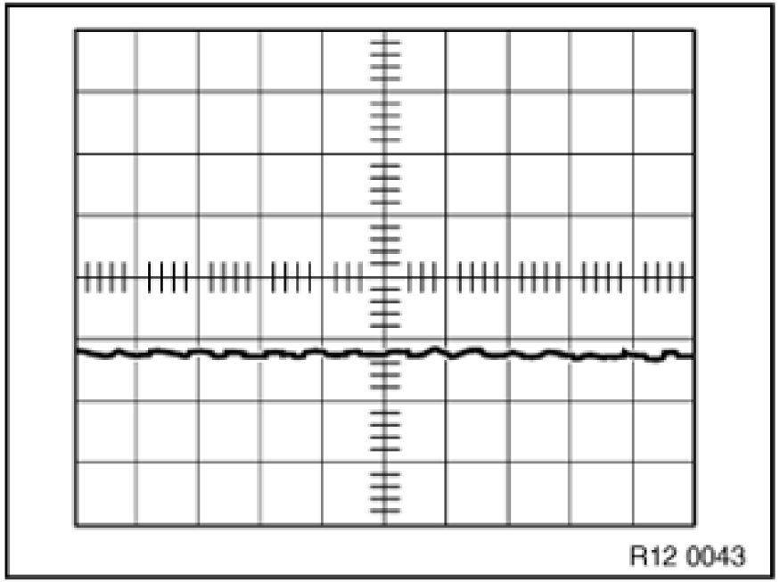
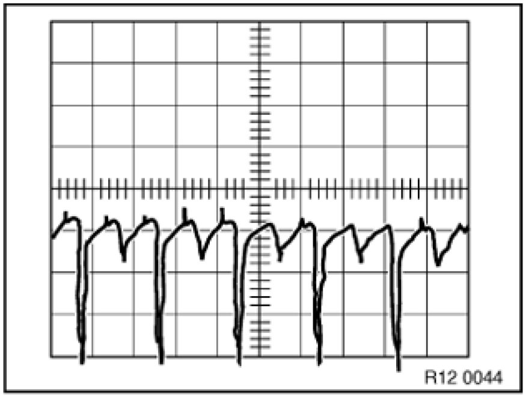
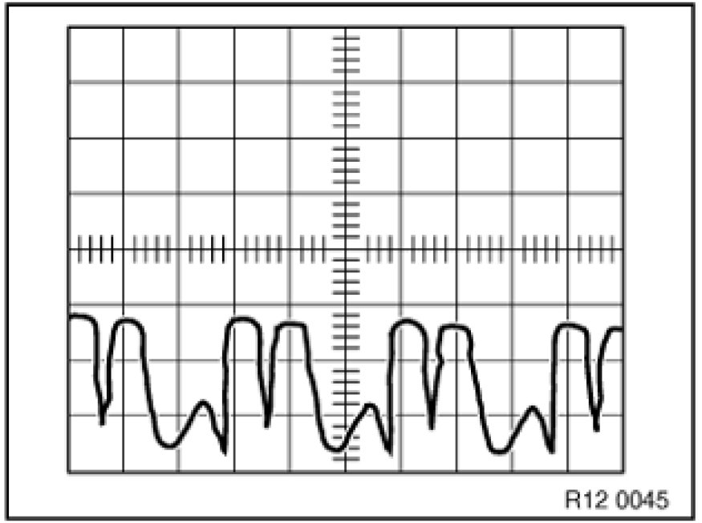
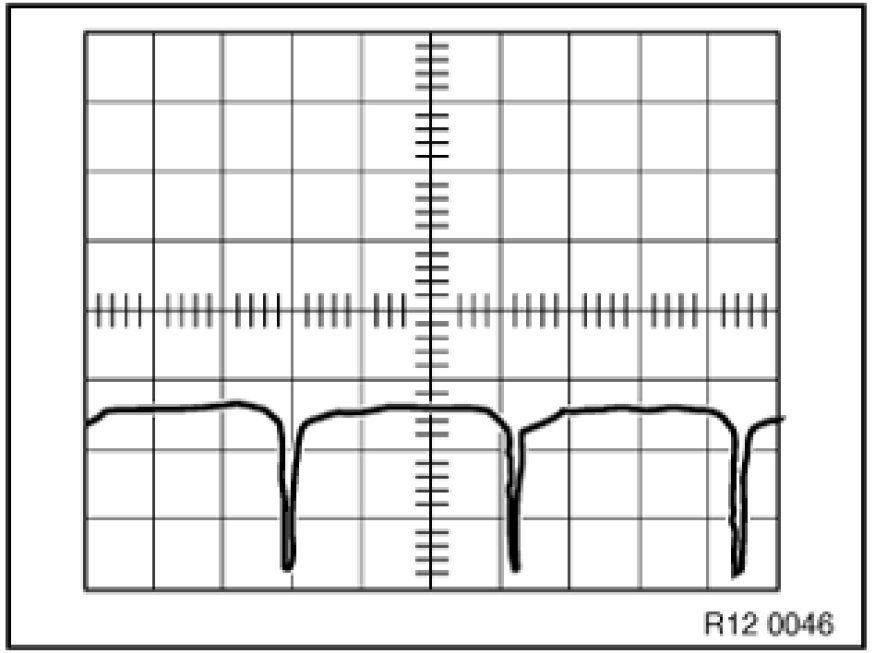
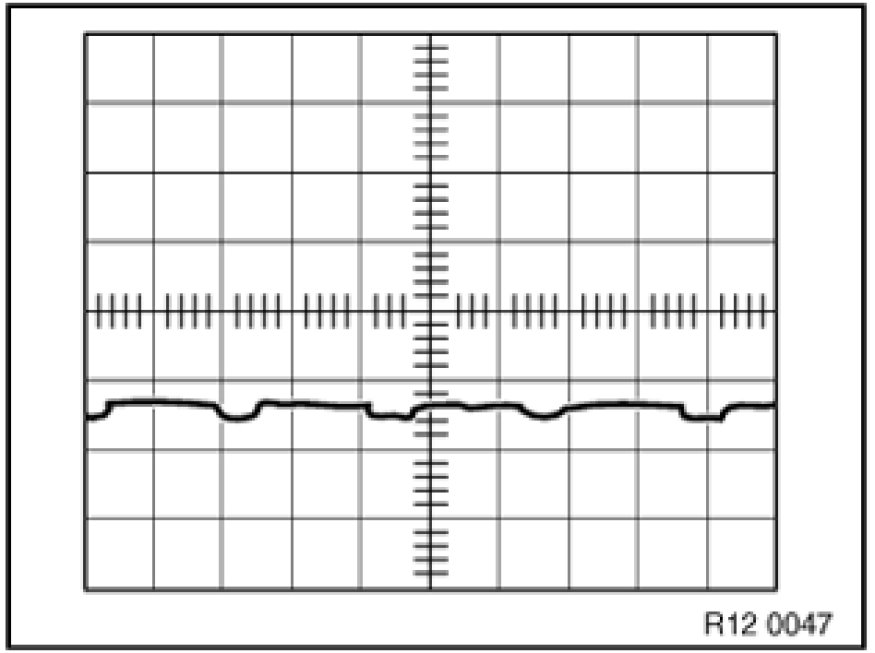
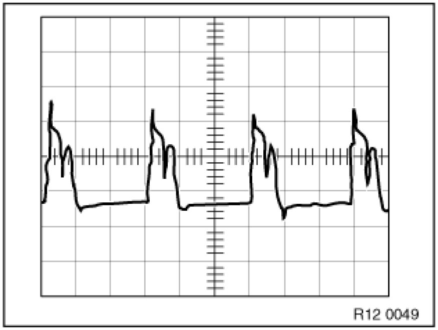
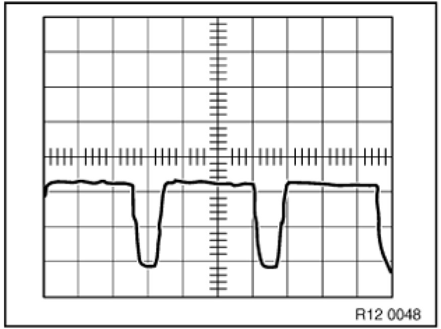

Alternator: Testing and Inspection
12 31 009 - Checking alternator (BSD)

Necessary preliminary tasks:
- Correct connections on charged battery
- Correct connections on alternator and starter motor
- Good ground connection between engine and body
- Tensioned ribbed V-belt
- Read out DME/DDE fault memory.

Note:
The alternator with BSD interface can communicate with the engine control unit (DME/DDE).
The alternator is not connected to the charge telltale light.
The alternator can identify various faults.
BSD alternator can be recognized by the plug connection on the alternator.
Connect diagnosis tester.
- Function selection
- Complete vehicle
- Drive
- Voltage and current regulation
- Voltage and current generation
- Alternator
- Follow instruction in diagnostic program

Oscillogram for a fault-free alternator:

Oscillogram for a faulty alternator:
One phase interrupted.
Repair/exchange alternator.

Interturn fault.
Repair/exchange alternator.

Open circuit in negative diode.
Repair/exchange alternator.

Short circuit in positive diode.
Repair/exchange alternator.

Open circuit in positive diode.
Repair/exchange alternator.

Open circuit in exciter diode.
Repair/exchange alternator.
Assemble engine.
Check function of DME/DDE.